JavaScript
The Other White Meat
Who am I?
- Developer Evangelist for Adobe
- Web Standards, HTML5, JavaScript, Mobile
- Blogging at www.raymondcamden.com

Who are you?
The Quest
It began well...
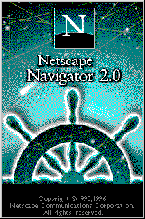And then this happened...
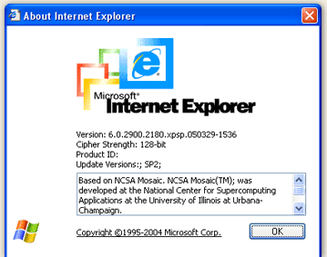RETREAT!
What got me back...
What I saw next...
The Plan
- What is JavaScript?
- How do I debug JavaScript?
- What are all these libraries?!?
- What do I do next?
- Bio breaks about once an hour
What is JavaScript
What is JavaScript (high level)
- A programming language
- Implemented in browsers, and elsewhere!
- A standard (ECMAScript 5.1) (more info)
- Old news, but to be clear, nothing to do with Java
What is JavaScript (low level)
- A way (but not the only way) to add interactivity to a web page
- Add, remove, and modify parts of a web page via the DOM
- Retreive data from various APIs for use in the browser
How is it used in the browser?
- Attributes of an HTML tag (not recommended)
- Via <script> tag
Attributes of a HTML tag
<p onclick="execute some stuff">
Yeah, don't do this.
Script Tag
<script type="text/javascript" src="somefile.js" />
<script type="text/javascript">
code here...
</script>
Playing (I mean learning)
- Create a blank HTML file
- Drop in a script block
- Write JS
- View in browser
- Just like HTML...
Playing (online)
jsbin.com
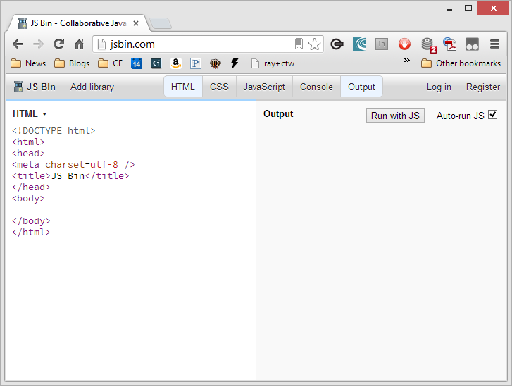Playing (online)
jsfiddle.net
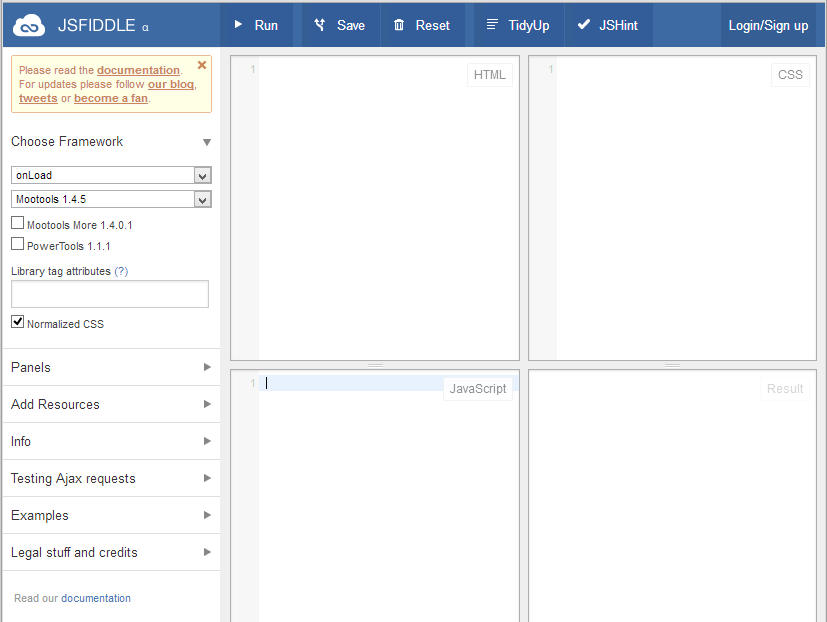Language Bits
- Dynamically/Weak typed
- Some core types and objects
- Case sensitive
- Prototype based (maybe not "pure" OO but let's not get picky)
Types of variables
-
Simple (aka primitive) values
- numbers, booleans (true or false), strings (letters), null, and undefined
-
Complex values
- Arrays, functions, objects
- Variables must start with a letter, underscore (_), or dollar sign ($); subsequent characters can also be digits (0-9). Because JavaScript is case sensitive, letters include the characters "A" through "Z" (uppercase) and the characters "a" through "z" (lowercase). [Credit: MDN]
Examples
x = 9;
y = 1.2;
z = "Ray";
x = 'Mond';
beer = true;
Numbers
- Numbers in JS are "double-precision 64-bit format IEEE 754 values"
- In English: They do weird crap with decimals
- You aren't landing on the Moon with this
- 0.1 + 0.2 == 0.30000000000000004
- Perfectly fine for normal mathematical operations
Robust Math
- +,-,*,/
- % (modulo, or remainder), parenthesis
- Math object provides a variety of basic operations
- Math.sin(), Math.cos(), Math.PI
- Infinity and -Infinity
- Other functions
Examples (GoTo JSFiddle)
Strings
- Delimited by double or single quotes
- Must be escaped (\) inside
- Ex: "The quote is \"We rule!\""
- Ex: 'The quote is "We rule!"'
- Special characters exist: \n for newline
Robust Strings
- You can add strings together. "Ray" + " " + "Camden"
- Length property
- Methods like charAt, endsWith, indexOf, split
- These act on the variables itself
Examples (GoTo JSFiddle)
Numbers and Strings
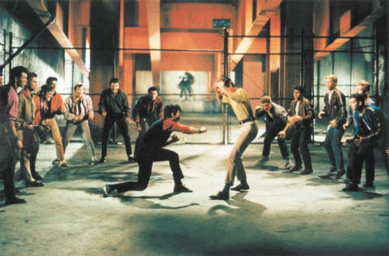
x = "1";
y = 2;
alert(x+y);
parseInt and parseFloat
- parseInt(input, radix)
- Just use 10 for radix
x = "1";
y = 2;
x = parseInt(x, 10);
alert(x+y);
Control
- if+else
- while and do while
- switch
- for
if
if(some condition) do something
if(some condition) {
do something
}
What the heck is ==?
- x=1 implies an assignment. "I'm setting x equal to 1."
- so if(x=1) means if( is the result of setting x to 1 true?)
- x==1 implies comparison
- Note: === also exists
Examples
if/else
if(some condition) {
do something
} else {
do something else
}
There is no "elseif"
if(some condition) {
do something
} else if(something else) {
do something else
} else {
ok I give up
}
While and Do/While
- Runs while something is true
- While may never run
- Do While always runs once
While Example
x = 5;
while(x < 10) {
alert(x);
x = x-1;
}
Do While Example
x = 5;
do {
alert(x);
x = x-1;
} while(x > 1)
Switch
Good for lots of IF type checks
Ugly, but workable, If example
x = 5;
if(x == 1) {
do something
} else if(x == 2) {
do something else
} else if(x == 3) {
do yet another thing
} else if(x == 4 ) {
my god r we done yet
} else {
finally
}
Better, because I said so
x = 5;
switch(x) {
case 1: {
do something;
break;
}
case 2: {
do something;
break;
}
case 3: {
do something;
break;
}
case 4: {
do something;
break;
}
default: {
the final option;
}
}
Examples (Local)
for
- Looping X times
- Useful when iterating over a list
for(x=1; x < 5; x=x+1) {
alert(x);
}
for(y=10; y > 0; y=y-2) {
alert(y);
}
for(x=1; x < 5; x++) {
alert(x);
}
Examples
Comments
- Two styles: One line and Multi line
//This is a single line comment
/*
This is a multi line comment.
Yeah, multiple lines.
*/
var x = 1; //Wow, x is 1
Arrays and Objects
- Both used to store data together in a collection
- Arrays store data in a numeric index
- A set of data you want to retrieve in a numbered format, use an array. Ex: 10 scores of a football team.
- Objects store data in a keyed index
- A set of data you want to retrieve by a named key, use an object. Ex: The team's coach is X, the team's QB is Y.
- Imagine an object with values for the coach and QB as well as the scores
Arrays
- Can be declared literally or in a fancy verbose manner.
x = new Array();
x[0] = "Ray";
x[1] = "Camden";
y = ["Ray", "Camden"];
Arrays
- All have a length property
- Indexed by numbers... that start at 0
- And have methods (push, pop, sort, slice, concat, etc)
Examples (Local)
Objects
- Can be declared literally or in a fancy verbose manner.
team = new Object();
team.coach = "Sean Peyton";
team["quaterback dude"] = "Noah Camden";
team = {coach:"Ray", "quarterback dude":"Camden"};
Examples (Local)
Functions
- Allow you to abstract and reuse a "process"
- Basic idea is - if you find yourself repeating something, stop
Example
function someprocess() {
do magic
return a value
}
function someotherprocess(input) {
based on input, do stuff
return the result
}
Example (JSFiddle)
Scopes
- Implicit Global Scope
- Function local scope
Example (Local)
The Fix
- var keyword
- Marks the variable as belonging to the function
Example (Local)
Custom Objects
Fancy way of saying - some code that will create an object for me.
Example
function makeTeam(name) {
var team = {};
team.name = name;
team.scores = [];
return team;
}
var saints = makeTeam("Saints");
alert(saints.name);
Example (Local)
Custom Objects
But we can do more - an object may contain both data and behavior!
Example
function makeTeam(name) {
var team = {};
team.name = name;
team.scores = [];
team.addScore = function(x) {
team.scores.push(x);
}
return team;
}
var saints = makeTeam("Saints");
saints.addScore(9);
alert(saints.scores[0]);
Example (Local)
Custom Objects - New and This
We can also create constructors, which support a concept of creating objects via the new syntax. The This scope then refers to the current instant of the object.
Example
function Team(name) {
this.name = name;
this.scores = [];
this.addScore = function(x) {
this.scores.push(x);
}
}
var saints = new Team("Saints");
saints.addScore(9);
alert(saints.scores[0]);
Example (Local)
Custom Objects - Prototype
- Every object has a prototype
- Think of it like the mold to make a new toy
- You can add properties to a prototype that are shared automatically
Example
function Team(name) {
this.name = name;
this.scores = [];
}
Team.prototype.addScore = function(x) {
this.scores.push(x);
}
var saints = new Team("Saints");
saints.addScore(9);
alert(saints.scores[0]);
Example (Local)
Inner Functions
- You saw an example of this earlier
- Useful way to abstract a utility within a utility itself
Example
function doX(name) {
var x = 0;
var result = "";
function doSomethingSpecial() {
x++;
}
doSomethingSpecial();
result = "I called my inner func "+x+" times.";
return result;
}
alert(doX());
Example (Local)
Closures
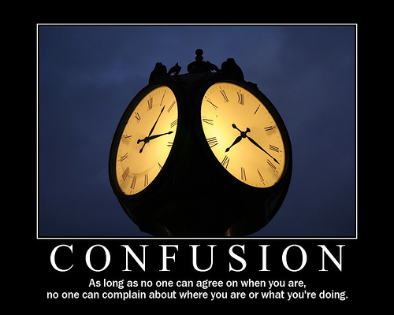Closures
- A way for a function to create a function
- ... that still has access to the scope it was created in
Example (THX MDN!)
function makeAdder(x) {
return function(y) {
return x+y;
}
}
addOne = makeAdder(1);
addTwo = makeAdder(2);
alert(addOne(9));
alert(addTwo(10));
Example (Local)
Other Core Objects
- Date
- RegExp
Example (Local)
ENTER THE DOM
The Document Object Model
- Standard, uniform API for HTML (and XML)
- This is how you interact with the page being shown
- Adding, modifying, and remove items from the DOM
- Listening for events on the DOM
Using the DOM
- Just more top level objects
- window
- document
- element
- nodeList (list of elements)
- attribute
- namedNodeMap (collection of attributes)
- console (crucial for testing!!)
Common APIs
- document.getElementById(id)
- element.innerHTML
- element.getElementsByTagName(name)
- document.createElement(name)
- element.set(get)Attribute
- element.addEventListener
- window.onload
Practical Example (in English)
Modify the submit button so that when clicked, I get the value of a form field. If the value isn't to my liking, I prevent the form from being submitting and modify the contents of a DIV tag to report an error.
Example (Local)
BREAK!
What to do when it won't do...
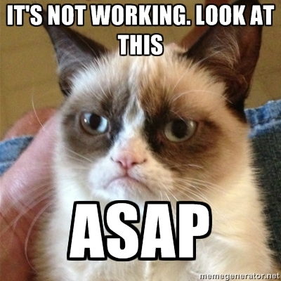So, um, we have a problem
It isn't the bugs
The problem is finding the bug
What has to work...
- JavaScript enabled
- jQuery Loaded
- jQuery UI
- jQuery UI CSS
- Have to select the right DOM for the autocomplete
- Have to ensure your setup options match what the control needs
- Have to ensure your data source (which is probably remote) is working right
Lots of Opportunities
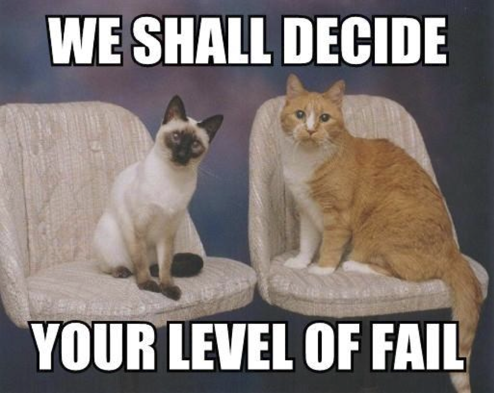The First Bug
is one your probably don't know you have
Can you spot the bug?
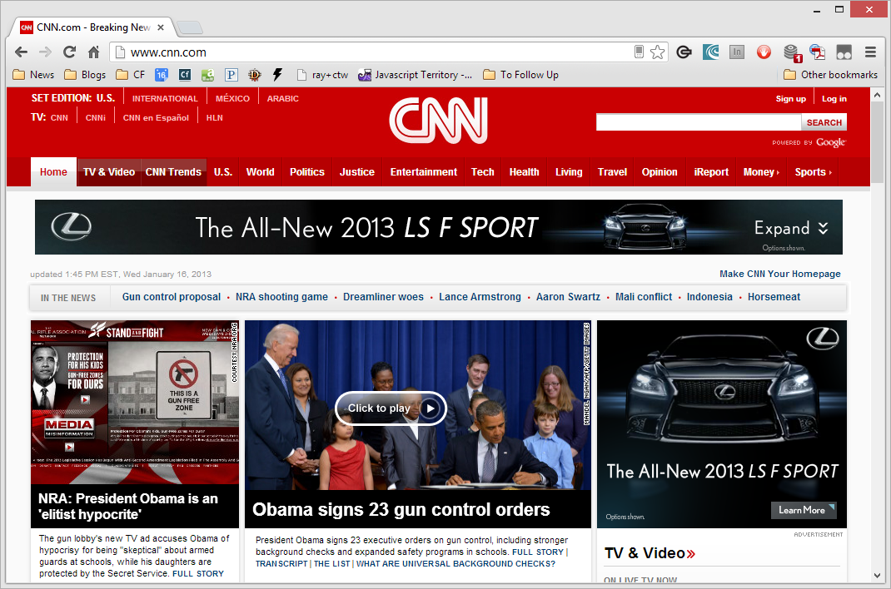Being Proactive
- Using the tools we're going to cover later
- Unit Testing
Chrome Extensions
- javascript-error-notifier
- http://code.google.com/p/javascript-error-notifier/
Demo
{errorception}
- http://errorception.com
- 30 day trial
- $5 plan that reports up to 500 errors
- Works via a simple embed
You've got a bug, now what?
- Learn your browser tools
- It doesn't necessarily matter if it's not your standard browser
- And guess what - you can use more than one (really)
Chrome Dev Tools
- Wrench -> Tools -> Developer Tools
- Keyboard combo
- Run at bottom, right, detached
Demo
What we care about...
- Console
- Network
- Elements
- Sources
- Resources
Console
- Errors show up here
- You can run commands here as well
- You can view log messages here
Console API
- Your code can send messages to the console (STOP USING ALERTS!)
- I use the heck out of this
- No, really, I make logs like a lumberjack
Console API
- http://getfirebug.com/wiki/index.php/Console_API
- log(), dir()
Examples
console.log("This works");
console.log("What is x?? "+x);
console.log("X", x);
console.log(object);
PRO TIP: The more you curse in your messages the quicker your code gets fixed!
Demo
console.dir()
- Dumps an object, not a simple value
- Good for complex data
- Good for figuring out the API to stuff
- Firefox does it a bit nicer
Demo
Network Requests
- Check the output
- Look for things like redirects or errors
- JSON/P is a bit different
Demo
Elements
- Handy for looking at your DOM
- Which may be dynamic (ColdFusion, Ruby, PHP, etc)
- Which may be dynamic (JavaScript)
Demo
Sources
- Losts of all the scripts on your page
- Also - a debugger
Debugger Key Terms
- Breakpoints
- Specific
- Dynamic
- DOM Change, XHR, Events
- Stepping (i.e. what to do on stop)
Demo
Resources
- Cookies, Databases, IndexedDB, Local (and Session) Storage, Application Cache
- As well as HTML, JS, and CS
Demo
BREAK!
Library-Apolooza
First - The Good News
Then - The Bad News
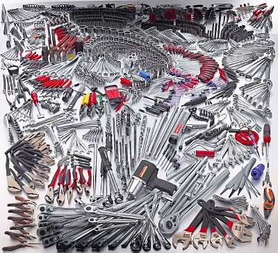jster.net
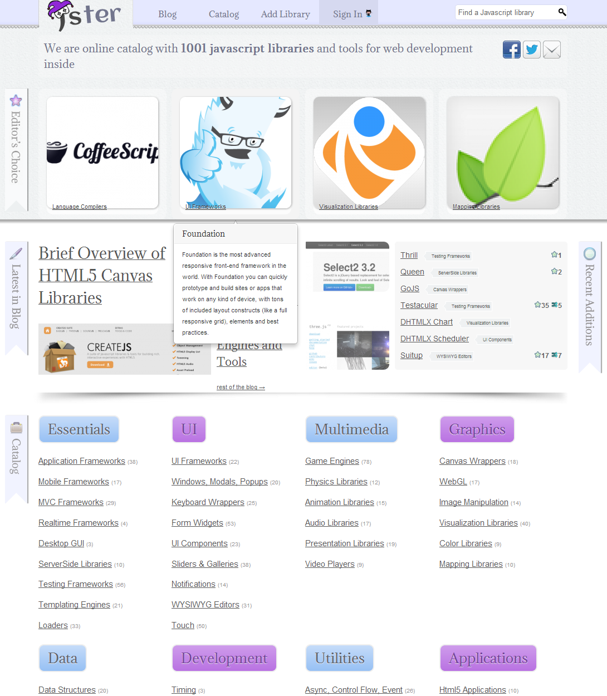The Number One Lesson
- Each of these libraries solve a problem
- If you don't have a problem, don't make yourself one
- Best thing to do is understand solutions exist and tailor your search to those problems
Types of Libraries (Rough!)
- DOM Manipulation (and Ajax typically)
- User Interface (make crap pretty!)
- Data type helpers (improve arrays, improve dates, etc)
- Architecture
- Testing
DOM Manipulation
- What they do: Make it easier to find and modify stuff on the page
- Many of these also help with Ajax
DOM Manipulation - Examples
- jQuery (jquery.com)
- Prototype (prototypejs.org)
- Zepto (zeptojs.com)
- MooTools (mootools.net)
- Dojo (dojotoolkit.org)
DOM Manipulation - jQuery
- Uses a CSS-based metaphor for finding items
- Makes Ajax pretty darn easy to use
- *Hugely* successful
jQuery Examples
UI Libraries
- What they do: Allow for advanced UI not supported in HTML
- Many of these work by taking 'regular' HTML and enhancing it
UI Libraries - Examples
- Sencha Ext JS (sencha.com/products/extjs)
- iUI (code.google.com/p/iui/)
- Yahoo! YUI (yuilibrary.com)
- jQuery UI (jqueryui.com)
- jQuery Tools (jquerytools.org)
UI Libraries - jQuery UI
- Built with jQuery
- Interactions, Widgets, and Effects
- Multiple themes
jQuery UI Examples
Data Type Helpers
- Generic "If working with X, I help you" type things
Data Type Helpers - Examples
- Underscore (documentcloud.github.com/underscore/)
- typeface.js (typeface.neocracy.org/)
- Moment.js (momentjs.com)
Data Type Helpers - Moment.js
- Helps parse dates
- Helps validate dates
- Helps manipulate dates
- Helps format dates
Moment.js Examples
Architecture
- Help organize your code
- FYI - GMail has over 400K lines of code
- Help separate concerns
Archticture - Examples
- RequireJS (requirejs.org)
- Backbone (backbonejs.org)
- Knockout.js (knockoutjs.com)
- Angular (angularjs.org)
- Batman.js (batmanjs.org)
Testing

Testing
- A way to prove your code works
- Given that your code does X, if you modify it to add some feature or fix a bug, how can you be sure that everything it did before still works?
- Tests
Moment.js Tests
Testing - Examples
- qUnit (docs.jquery.com/QUnit)
- Mocha (visionmedia.github.com/mocha/)
- Tutti (tuttijs.com)
- Jasmine (pivotal.github.com/jasmine)
Testing - Jasmine
- "Behavior-driven" tests
- "This should do X..."
- English-language type code
Jasmine Examples
Credit Jeff Atwood
Books
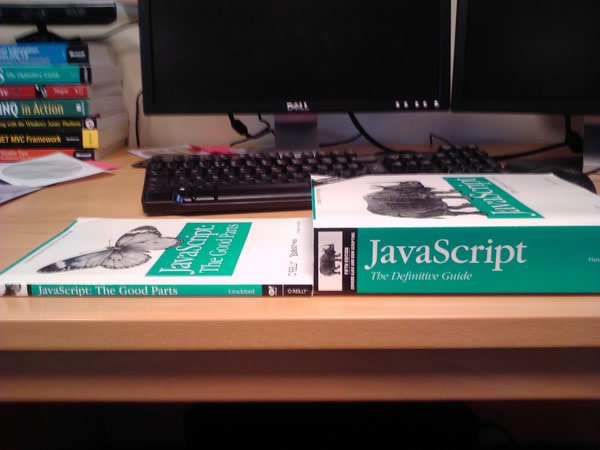Books
- JavaScript: The Definitive Guide
- JavaScript: The Good Parts
- Eloquent JavaScript
Sites
- MDN (developer.mozilla.org)

Mailing Lists
More...
- Conferences
- Training
Thank You!
- I live for your feedback! (raymondcamden.com)
- github.com/cfjedimaster/javascript-lab
- Gratuitous pictures of my kids